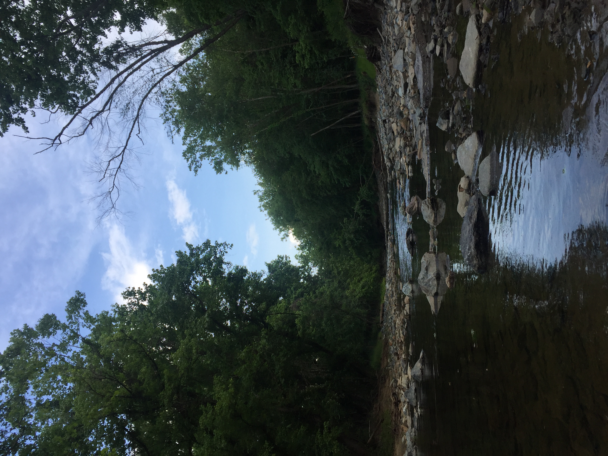

Where I'm From
Bethesda, Maryland

I'm from Bethesda, Maryland, which is a suburb of Washington DC. It lies just outside of the nation's capital, and along the Chesapeake and Ohio Canal. Bethesda has many attractions from scenic hikes to a modern downtown area with a plethora of restaurants. Bethesda is a short drive from the Delaware and Maryland beaches.
Favorite Places in MD
- Great Falls, MD
- Maryland has creeks, rivers, canals, lakes, and oceans. My favorite spot is Great Falls, MD, where you can hike and cliff jump.
- Downtown Bethesda, MD
- Bethesda is filled with restaurants and shops, and is beautifully decorated any time of the year.
- Ocean City, MD
- An amazing beach town with lots to do and beautiful beaches. It has great crab restaurants too.